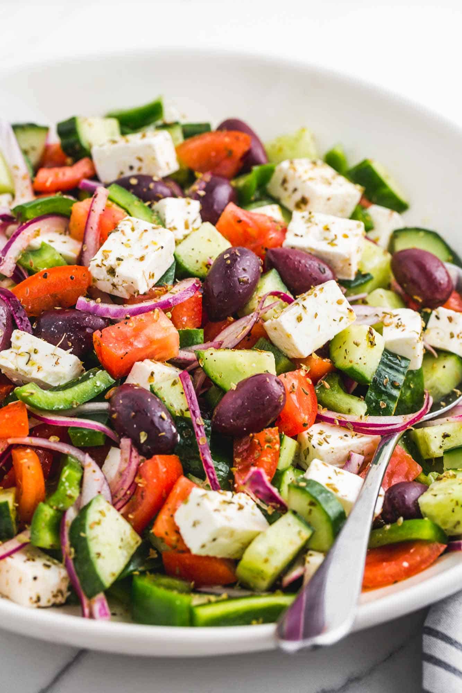

Greek salad

Description
The Greek salad is the quintessential Mediterranean salad and is incredibly easy to put together in no time.
Tangy, crunchy, combining various textures, the Greek salad is a light dish perfectly suited for the hot summer
months and pairs perfectly with roast chicken or beef as a side dish. Although the salad contains no lettuce,
it is just as refreshing with the added bonus of keeping well in the fridge.
Ingredients
- 1 large cucumber
- 1 red onion
- 1 cup of kalamata (black) olives
- 3 tomatoes
- 1 green bell pepper
- 200g of feta cheese
- 1/4 cup of extra virgin olive oil
- A sprig of thyme and oregano
- 1 tablespoon of Dijon mustard
- Lemon juice of 1/2 of a lemon
- Salt and black pepper
Steps
- Slice the cucumber into managable halves or quarters.
- Slice the tomatoes into wedges.
- Slice the red onion thinly by cutting across the grain (perpendicular to the root).
- Slice the kalamata olives in half.
- Dice the green bell pepper.
- Add all the prepped ingredients in a bowl and add the feta cheese on top, breaking it up by hand.
- Add the olive oil, mustard, lemon juice, thyme and oregano herbs, a pinch of salt and pepper, seal the jar and shake vigorously.
- Combine the dressing with the salad, toss to incorporate it and the salad is done!